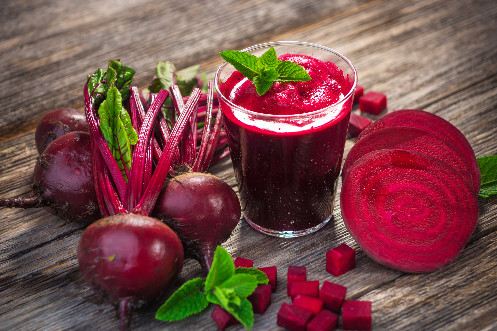
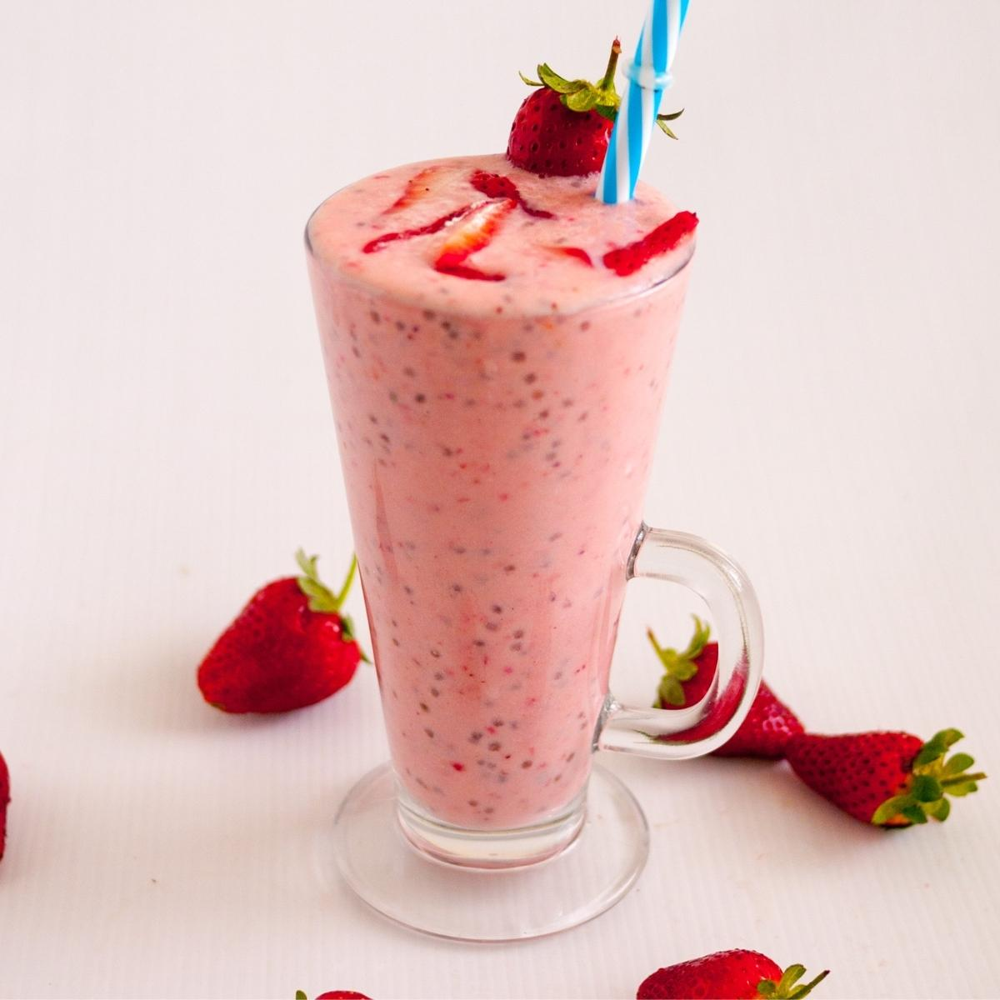
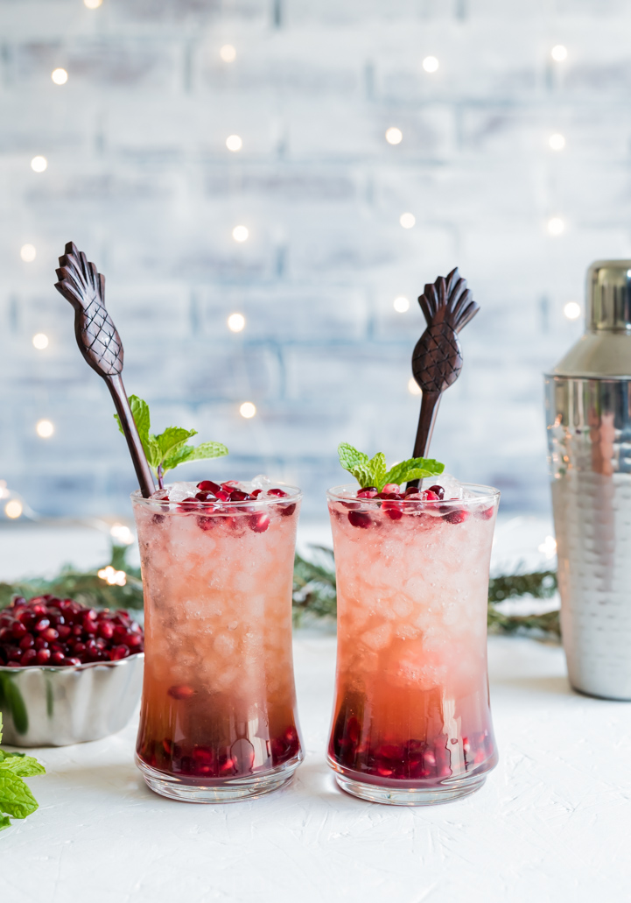

Beetroot Juice
Contains nitrate which improves exercise performance. Converted into nitrate oxide in the body, it improves blood circulation and increases muscle contradiction.

Chia Berry Smoothie
Drinking this before exercising can help surpress post-exercise muscle fatigue, as berries are a natural source of antioxidants. The chia seeds added are a good source of dietary fibre and protein.

Pomegranate Passion Juice
Pomegranate juice has lots of vitamins that can help exercise performance and post-exercise recovery.

Banana Apple Juice
Not only does the banana contain lots of vitamins and minerals, it also contains high energy carbs to provide energy that can improve exercise performance. The apple also have lots of vitamins and a revitalizing, cooling quality.